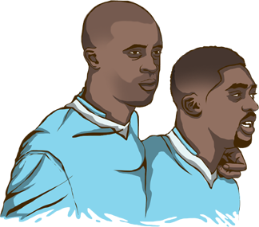
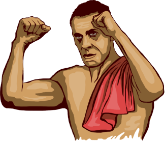

Yaya Touré levanta la Copa de la Premier League. Mira al cielo y agita el trofeo con violencia. Se ve indignado sin razón aparente. Dos meses antes había festejado la obtención de la Capital One Cup. El Manchester City le debía mucho de ambas. Debería estar feliz, pero sus gestos expresan coraje.
"Me hubiera gustado estar cuatro o cinco días con mi hermano antes de viajar al Mundial, pero tenía que ir a celebrar el título de Campeón a Abu Dhabi, había sido campeón mientras mi hermano pequeño se apagaba en una cama de hospital", explicó con remordimiento.
Ibrahim Touré, hermano menor de Yaya, falleció de cáncer a los 28 años. "Era mi confidente, mi amigo". Tanto Yaya como Kolo (jugador del Liverpool) abandonaron la concentración de la Selección Costa de Marfil durante el Mundial de Brasil para asistir al entierro.
Días después Yaya explicó lo complicado de sobrellevar la situación en el papel de jugador profesional, siempre con presión, siempre bajo el reflector, ocultando la tristeza. "Sabía bien que sufriría al ver empeorar la salud de mi hermano. Esa fue la razón por la que tuve varias lesiones en el final de temporada. La cabeza controló mi cuerpo. Estos últimos cuatro meses han sido, sin duda, los más duros de mi vida”.
Un estudio realizado por Universidad Metropolitana de Venezuela arrojó que sólo el 10,7% de los familiares con enfermos oncológicos viven un duelo común, el resto sufren depresión, duelo crónico o sentimientos inestables. Ambos jugadores recibieron atención psicológica del club.

El matrimonio del exfutbolista del Manchester United, Rio Ferdinand y Rebecca Ellison, duró sólo seis años, pero no incumplieron ninguna de las promesas que se hicieron al casarse. Ella falleció de cáncer de mama a los 36 años.
“A veces, cuando me he perdido algún partido importante por lesión, he pensado que era el fin del mundo. Pero, créanme, eso no es nada comparado con que a tu mujer, la madre de tus tres hijos, le diagnostiquen un cáncer a los 34 años", expresó al rotativo ‘The Sun’.
En aquella ocasión el cáncer, una de las 10 causas principales de defunción en el mundo, logró homologar al mundo del futbol. Diferentes equipos, amigos y rivales, mostraron su cariño y apoyo al jugador inglés.
"Quise continuar con el equipo, pero no podía. Se jugaba el descenso. Los últimos meses han sido los más duros de mi vida al ver a mi valiente esposa sucumbir al cáncer sin poder hacer nada al respecto y, a la vez, gestionando las emociones de los tres niños. Pero ese día amaneció soleado y nos despedimos de ella de la forma en la que le hubiera gustado. Ella quería que fuera una celebración de su vida en lugar de una ocasión triste".
;){kind=link}